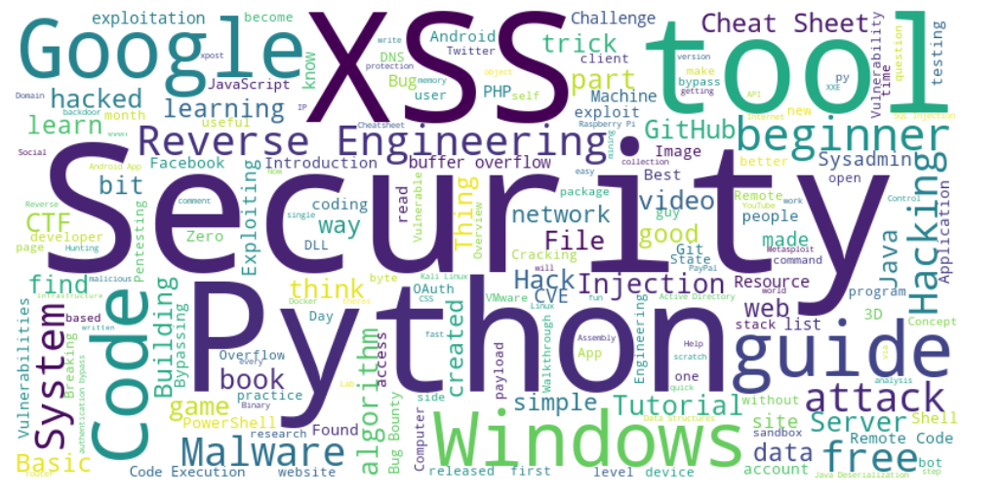

Intro
Over six years of studying, and working in technology Ive acquired over 600+ links. Losing these links to me would feel like the burning down of the Library of Alexandria. I use alot of them as references for programming and information security based work.
While scraping all these links I saw the word beginner become less frequent as we got closer to the present day, so I even found a fun way to add a visualization to this post.
Browser based Library of Alexandria
I cant stress the importance of reading enough, it will advance you more than you can imagine.
While writing a brief script to scrape all these links, which I will link shortly, I realized there are actually trends in these links.
We can actually use some python libraries and heuristics to identify these trends amongst the links.
- Script I used to harvest my saved links from reddit, frequency data, and simultaneously create a word cloud
- The organized and sorted links.
You can find the raw unsorted copy of all of the links here https://pastebin.com/raw/9K5sNfgK
Itll have a good deal of extraneous links that I found interesting, but Ive omitted them from this in order to keep it on topic of security.
Security is more than just knowledge of mechanism or inner-workings of code, its also a mindset. So I have some materials relating to social engineering, and overall thought process mixed in some places.
get_links && make_wordcloud
|
|
Its a pretty succint script, I try to operate under the thought that if its clean enough its fairly self explanatory. Its a little personalized but you could easily edit it to do the same for you.
4 Step Linear flow:
Read in config -> Auth to reddit -> Scrape links into string and save to file -> generate word cloud
So what does this give us?

Personally I find that pretty neat, its a visualization of all Ive tried to hone in on over the years.The one that stands out most to me is Reverse Engineering, Ive been working on learning for a while. Its definitely one of the more challenging things Ive tried to wrap my mind around.
So Ive decided to throw it at the top of this list. Without delay, here is my best attempt at a sorted list.
Reverse Engineering && Malware
Bug Bounties
Penetration Testing (Exploit POCs, vulnerabilities)
{kind=link}
Web Application Security
Computer Science && Algorithms
{kind=link}
{kind=link}
CTF
Web Development
Defensive Security && Sys Admin
| Title | URL |
|---|---|
| Securing Windows Workstations: Developing a Secure Baseline » Active Directory Security | https://adsecurity.org/?p=3299 |
| Detecting Lateral Movements in Windows Infrastructure | http://cert.europa.eu/static/WhitePapers/CERT-EU_SWP_17-002_Lateral_Movements.pdf |
| IT and Information Security Cheat Sheets | https://zeltser.com/cheat-sheets/ |
| Docker for Automating Honeypots or Malware Sandboxes | https://dadario.com.br/docker-for-automating-honeypots-or-malware-sandboxes/ |
| A honeypot proxy for mongodb. When run, this will proxy and log all traffic to a dummy mongodb server. | https://github.com/Plazmaz/MongoDB-HoneyProxy |
| White Hats | http://blog.pentestnepal.tech/ |
| Security Resources: Beginner to Advanced. | https://hrushikeshk.github.io/blog/2018/01/15/security-resources/ |
| Leaked Slides Outline What Are Probably Some of the Most State-Of-The-Art Artifical-Intelligence Powered Social Engineering Methods of the Present Day (partial x-post /r/gaming) | https://imgur.com/a/l4yQ5 |
| Windows Admins: Let’s all take a second to thank or think about Nir Sofer for all the help over the years. What a great portfolio of simple, to the point tools. | http://www.nirsoft.net/about_nirsoft_freeware.html |
| GitHub - avatsaev/touchbar_nyancat: Stupid nyancat animation on your +$2k MacBook Pro’s Touchbar | https://github.com/avatsaev/touchbar_nyancat |
| Your Social Media Fingerprint | https://robinlinus.github.io/socialmedia-leak/ |
| Malware, malicious charging stations, and rogue cell towers - Oh My! NIST releases the Mobile Threat Catalogue for public comment on Github. | https://pages.nist.gov/mobile-threat-catalogue/ |
| Website enumeration insanity: how our personal data is leaked (xpost r/sysadmin) | https://www.troyhunt.com/website-enumeration-insanity-how-our-personal-data-is-leaked/ |
| PowerShell Security: PowerShell Attack Tools, Mitigation, and Detection | https://adsecurity.org/?p=2921 |
| Awesome Infosec Resources | https://github.com/onlurking/awesome-infosec |
| I made a website that explains basic network theory | https://www.reddit.com/r/sysadmin/comments/46r5ws/i_made_a_website_that_explains_basic_network/ |
| Excel tricks to impress your boss | http://i.imgur.com/s8neQNJ.jpg |
| Defending Against Mimikatz | https://jimshaver.net/2016/02/14/defending-against-mimikatz/ |
| Wireshark Workflow - Analyzing Malicious Traffic (Sasser Worm) | http://hackmethod.com/malicious-network-traffic-wireshark/ |
| CryptoWall 4.0 Released - We’ve already seen it with one of our clients | http://www.bleepingcomputer.com/news/security/cryptowall-4-0-released-with-new-features-such-as-encrypted-file-names/ |
| Portrait of a Sysadmin | https://www.facebook.com/baattinofficial/videos/1190780811044387/ |
| Tron v6.7.0 (2015-09-23) // Disable Windows 10 telemetry; Remove Lenovo spyware; large improvements to OEM de-bloat section | https://www.reddit.com/r/sysadmin/comments/3m71gt/tron_v670_20150923_disable_windows_10_telemetry/ |
| Script that tracks the devices in your network and displays statistics/charts about what is running at which times. (I’m definitely the one spending the most time on my computer in my flat) | https://github.com/phiresky/nmap-log-parse |
| Great list of sysadmin resources/tools | https://github.com/kahun/awesome-sysadmin |
| I’ve been sent a clearly malicious bit.ly link by a hacked skype account. What’s the best way to safely analyze where the malice is? | https://www.reddit.com/r/AskNetsec/comments/3fkmiz/ive_been_sent_a_clearly_malicious_bitly_link_by_a/ |
| Awesome tip i learned form a graybeard, the .\ | https://www.reddit.com/r/sysadmin/comments/3dmmcl/awesome_tip_i_learned_form_a_graybeard_the/ |
| Free certification practice test engine with thousands of questions for CCNA, CISSP, CEH, Net+, Sec+, PMP, etc. | https://www.skillset.com/certifications?a=m |
| PSA for people who often do troubleshooting. PSR is relatively unknown, and it’s awesome. | http://windows.microsoft.com/en-us/windows7/how-do-i-use-problem-steps-recorder |
| HOW TO: Remove yourself from MOST background check sites and people search engines. Thanks to LawyerCT & Pibbman! | https://www.reddit.com/r/technology/comments/31u84n/how_to_remove_yourself_from_most_background_check/ |
| Tron v6.1.0 (2015-03-29) // Add Kaspersky VRT, remove Vipre (speed increase), logging cleanup, preserve LogMeIn sessions | https://www.reddit.com/r/sysadmin/comments/30x1xu/tron_v610_20150329_add_kaspersky_vrt_remove_vipre/ |
| Sad Server: All SysAdmin’s will Love this Twitter Handle [Truly Hilarious] | https://twitter.com/sadserver |
| I made a free tool for rapidly scanning Cisco routers. [Download link in post] (xpost from /r/netsec) | https://www.reddit.com/r/sysadmin/comments/2suyid/i_made_a_free_tool_for_rapidly_scanning_cisco/ |
| So apparently you need a CAL to obtain an IP address from a Windows DHCP Server.. | http://blogs.technet.com/b/volume-licensing/archive/2014/03/10/licensing-how-to-when-do-i-need-a-client-access-license-cal.aspx |
| I was unhappy with the other subnet calculators out there so I built one myself. I hope you agree it’s better than the rest. | http://www.tunnelsup.com/subnet-calculator |
| The Best Hidden Features of VLC: downloads YouTube videos, records desktop, converts video files and more | http://lifehacker.com/the-best-hidden-features-of-vlc-1654434241 |
| windows 10 to have a package manager | http://www.howtogeek.com/200334/windows-10-includes-a-linux-style-package-manager-named-oneget/ |
| Found this brilliant guide on StackExchange - how to Hack into a computer through its MAC and IP address (x-post from /r/sysadmin) | http://security.stackexchange.com/questions/56181/hack-into-a-computer-through-mac-and-ip-address |
| Worked on a completely locked down machine. Time passed quick | https://www.reddit.com/r/excel/comments/2jtd2f/worked_on_a_completely_locked_down_machine_time/ |
| How I made the office IT guy hate me | http://imgur.com/QCBtATV |
| Just Sysadmin Things… for which I’ve been reprimanded | https://www.reddit.com/r/sysadmin/comments/2gt7x5/just_sysadmin_things_for_which_ive_been/ |
| In honor the 4th of July, I present Tron, who “fights for the User” (automated disinfect/cleanup package) | https://www.reddit.com/r/sysadmin/comments/29u4c3/in_honor_the_4th_of_july_i_present_tron_who/ |
| Happy Hour Virus - How to leave work early (XPost from /r/ProgrammerHumor) | http://happyhourvirus.com/ |
| How do you get new desktop machines ready as soon as possible? | https://www.reddit.com/r/sysadmin/comments/1tj5ob/how_do_you_get_new_desktop_machines_ready_as_soon/ |
| Active Directory Administrators Toolkit | https://www.reddit.com/r/sysadmin/comments/1t3a2a/active_directory_administrators_toolkit/ |
| Why PowerShell? | http://ramblingcookiemonster.wordpress.com/2013/12/07/why-powershell/ |
| So my daughter’s friends thought they would prank her… | https://www.reddit.com/r/sysadmin/comments/1ontpn/so_my_daughters_friends_thought_they_would_prank/ |
| Best security practices for a VMware Workstation sandbox | https://www.reddit.com/r/AskNetsec/comments/17r95x/best_security_practices_for_a_vmware_workstation/ |
{kind=link}
Tech News
Saved Comments
TIL that Doom was so popular in 1995 that it was installed on more PCs than Windows 95. Bill Gates briefly considered buying ID software, but settled for getting a team at Microsoft to port the game to Win95. The team was led by Gabe Newell. > inverse square root
There is no obvious reason why this should work, and how Carmack or any of the previous users of this stunningly elegant hack came across the magic value 0x5f3759df appears to have been lost to history. Beyond3D tried to trace it back through the ages, but after going through Carmack, an x86 assembly hacker called Terje Matheson, NVIDIA and eventually Gary Tarolli who used it in his days at 3dfx, the trail went cold.
It’s a real pity, because finding that constant would have required someone to think in a completely different direction to everyone else, and be convinced enough that such a constant even existed to spend time narrowing it down.
Source: https://blog.dave.io/2011/10/0x5f3759df-true-magic-number/
From a web dev perspective, familiarize yourself with the OWASP rules to prevent it if you want to stay safe. XSS is one of the easiest things to find in the wild. Usually I can find it pretty quickly in a vulnerable site by just looking at the chrome network connections and seeing when requests are made with URL params, and see if changing those gets inserted into bad spots in the page - and that’s just reflected XSS, low hanging fruit. Some people just put URL parameters right into javascript, and something like ', 'z':alert('xss'), 'y': ' can work. Also, it’s not just quotes. alert(/XSS/) will execute too.
Just make sure you track the flow of user input, and never assume obfuscation or an extremely complex javascript file is enough to prevent people from realizing where input goes and how it might be processed. If you check for URL params that are prepended with debug_ and do something special with them, it’s going to be possible for attackers to find that and send their own input. And never assume that it being processed server side is enough to prevent people from finding a vulnerability.
Also, make sure you test with firefox. I’ve found that firefox has a lot of potential XSS that chrome fixes on its own. Chrome might prevent HTML tag injections like